Generado: 2026-10-04T23:12:37.017250+00:00 UTC
Cuenta DEMO MetaQuotes. Símbolo exacto de LINK en este broker: `DOGUSD` — Dogecoin vs US Dollar (USD/USD). Total de símbolos con 'LINK': 0.
Compra (ask): 0.0968, venta (bid): 0.0959, spread: 0.0009 USD. Hora de la cotización: 2026-10-05 02:11:22+00:00 UTC. ⚠️ Tick de viernes 02/10 (feed congelado o mercado cerrado por fin de semana).
Columnas: ['open', 'high', 'low', 'close', 'tick_volume', 'spread', 'real_volume']. Período: 2026-09-30 22:00:00+00:00 → 2026-10-05 01:00:00+00:00 (UTC), 100 registros.
Período solicitado: 2026-09-27 → 2026-10-04. Obtenido: 2026-09-28 00:00:00+00:00 → 2026-10-04 23:00:00+00:00 (UTC), 168 registros.
Nulos por columna: {'open': 0, 'high': 0, 'low': 0, 'close': 0, 'tick_volume': 0, 'spread': 0, 'real_volume': 0}. Fechas duplicadas: 0. Intervalos horarios sin registros: 0. Posible causa: mercados cerrados el fin de semana y feed demo sintético; el conteo de cierres puede tener huecos donde el servidor no emitió vela.
Período: 2026-09-28 00:00:00+00:00 → 2026-10-04 23:00:00+00:00 (UTC), 168 registros. Máximo: 0.10 (2026-09-28 00:00:00+00:00 UTC). Mínimo: 0.09 (2026-10-02 21:00:00+00:00 UTC).
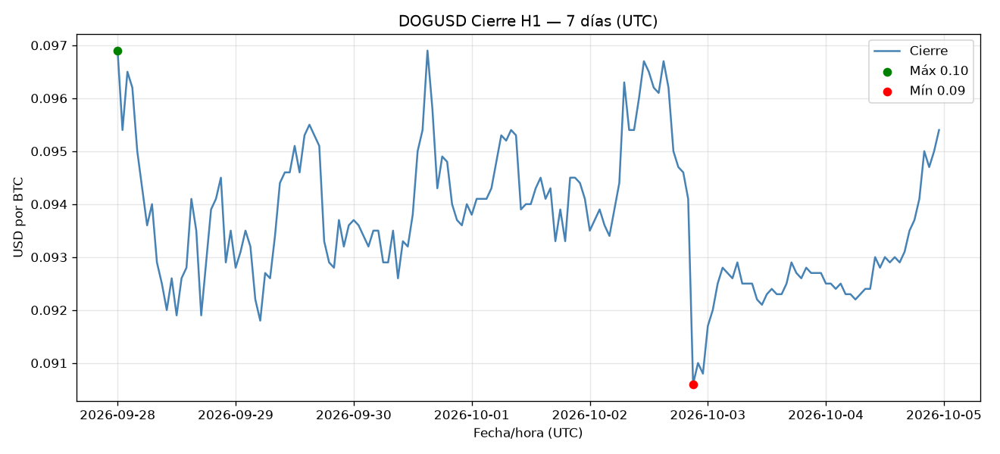
Top 10 rangos (high-low) en USD:
time
2026-10-02 21:00:00+00:00 0.0
2026-09-30 16:00:00+00:00 0.0
2026-09-28 17:00:00+00:00 0.0
2026-10-02 07:00:00+00:00 0.0
2026-09-30 17:00:00+00:00 0.0
2026-09-30 15:00:00+00:00 0.0
2026-09-29 18:00:00+00:00 0.0
2026-09-28 19:00:00+00:00 0.0
2026-10-02 17:00:00+00:00 0.0
2026-09-28 08:00:00+00:00 0.0
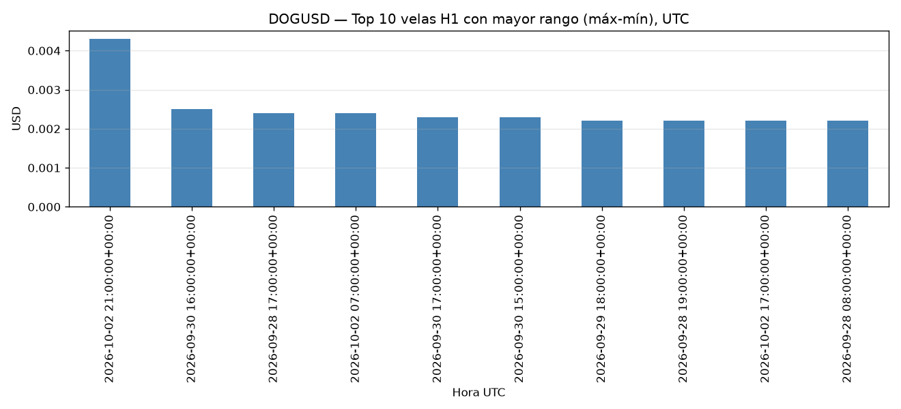
Top 10 horas con mayor % de subida del cierre respecto a la hora anterior. Mayor subida: 2.01% en 2026-10-02 07:00:00+00:00 UTC.
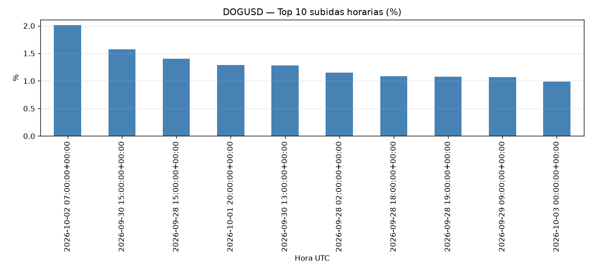
Top 10 horas con mayor % de caída. Mayor caída: -3.72% en 2026-10-02 21:00:00+00:00 UTC.
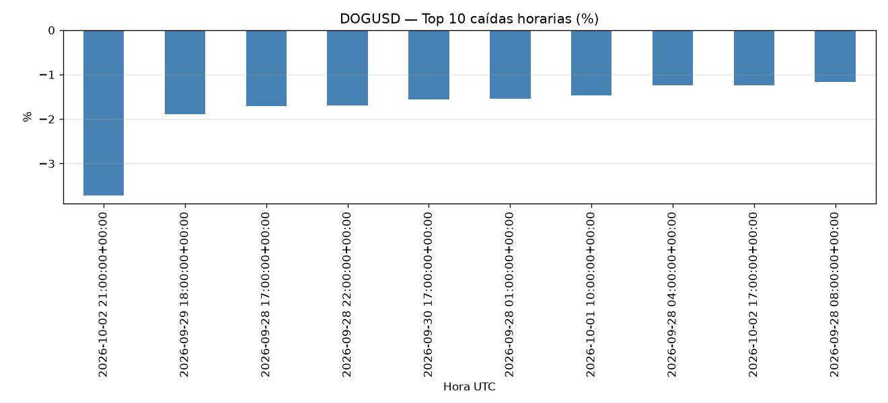
Conteo: {'bajista': 78, 'alcista': 74, 'doji': 16}. 168 velas H1 en 2026-09-28 00:00:00+00:00 → 2026-10-04 23:00:00+00:00 (UTC), 168 registros.
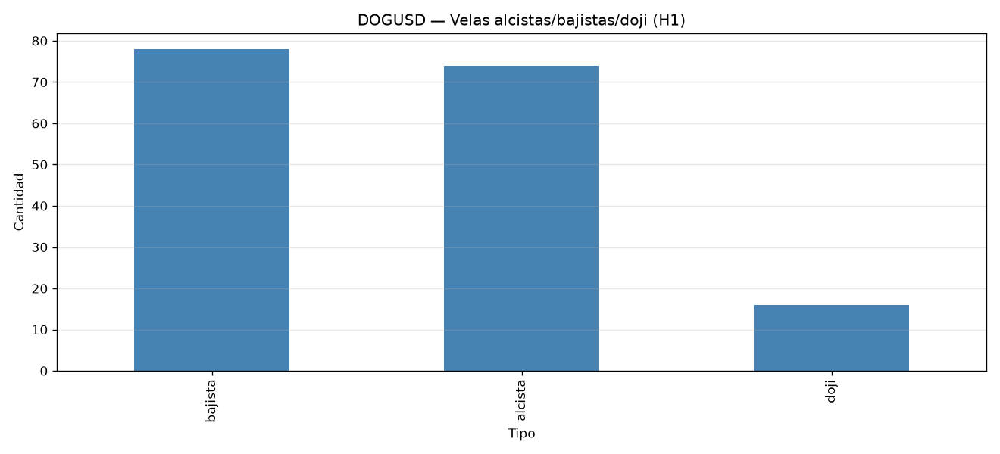
Apertura/máx/mín/cierre y %Δ diario:
open high low close tick_volume change_pct
time
2026-09-28 00:00:00+00:00 0.097 0.097 0.091 0.094 7134 NaN
2026-09-29 00:00:00+00:00 0.094 0.096 0.091 0.094 4902 0.107
2026-09-30 00:00:00+00:00 0.094 0.098 0.092 0.094 4775 0.427
2026-10-01 00:00:00+00:00 0.094 0.096 0.093 0.094 3733 0.106
2026-10-02 00:00:00+00:00 0.094 0.098 0.090 0.091 4325 -3.507
2026-10-03 00:00:00+00:00 0.091 0.093 0.091 0.093 1008 2.093
2026-10-04 00:00:00+00:00 0.093 0.096 0.092 0.095 1145 2.913
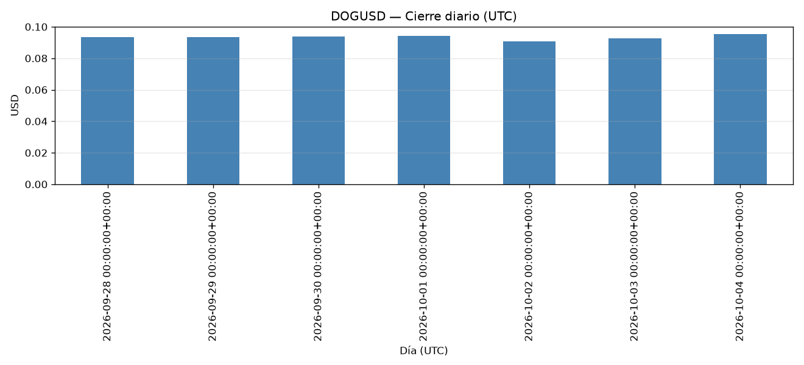
Mayor subida diaria: 2026-10-04 00:00:00+00:00 (2.91%). Mayor caída: 2026-10-02 00:00:00+00:00 (-3.51%). Mayor rango máx-mín: 2026-10-02 00:00:00+00:00. Coinciden en el mismo día cuando la jornada con más volatilidad también cierra con mayor variación.
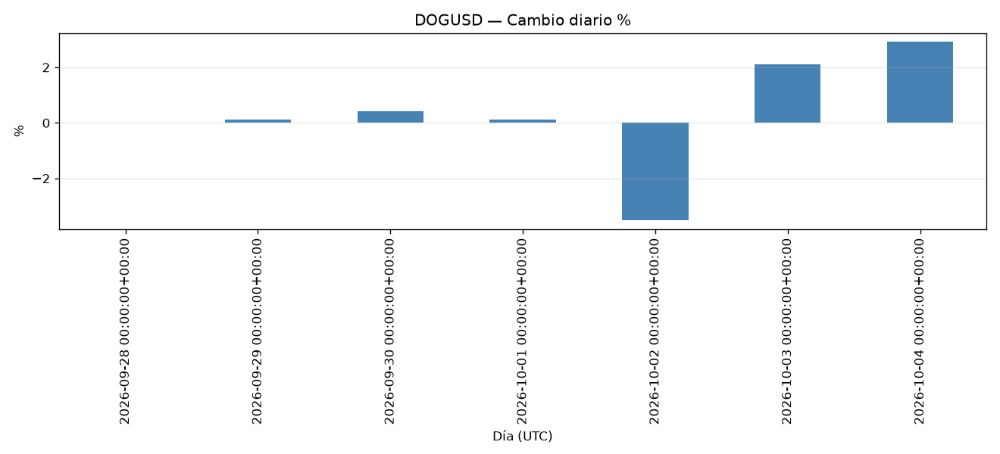
Movimiento % promedio por hora del día (UTC). Horas con mayor movimiento: [17, 21, 18].
time
0 0.485
1 0.406
2 0.380
3 0.228
4 0.485
5 0.335
6 0.551
7 0.456
8 0.562
9 0.367
10 0.654
11 0.274
12 0.367
13 0.488
14 0.273
15 0.620
16 0.449
17 0.951
18 0.715
19 0.413
20 0.593
21 0.837
22 0.457
23 0.352
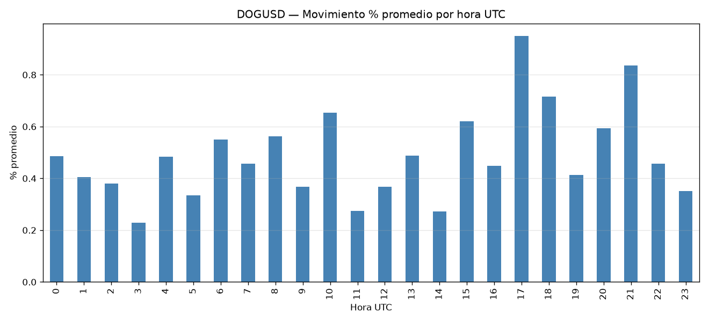
Se comparan lunes a domingo. La fuente proporcionó 48 velas H1 de fin de semana en el período.
Lun 0.851
Mar 0.556
Mié 0.547
Jue 0.376
Vie 0.638
Sáb 0.222
Dom 0.236
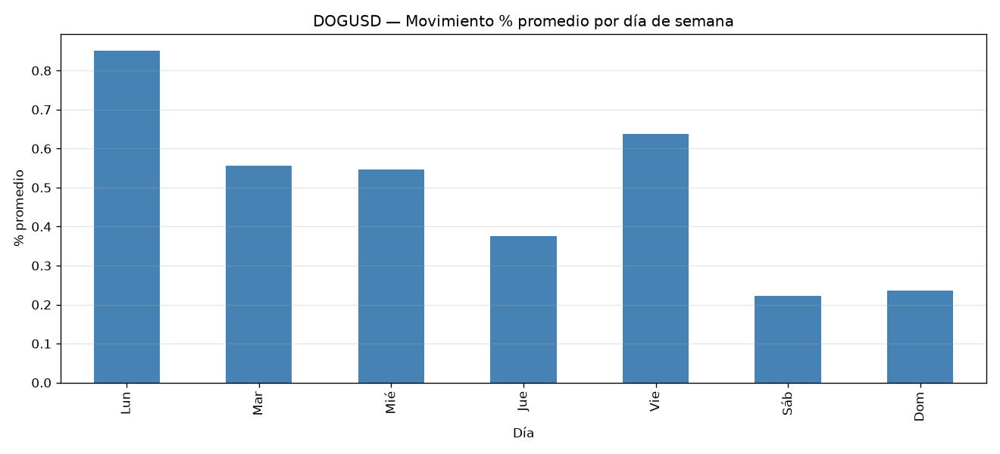
SMA20 graficada junto al cierre. Cruces de cierre de debajo a encima de la SMA: 10 (['2026-09-28 23:00:00+00:00', '2026-09-29 02:00:00+00:00', '2026-09-29 08:00:00+00:00', '2026-09-30 12:00:00+00:00', '2026-10-01 04:00:00+00:00', '2026-10-01 14:00:00+00:00', '2026-10-01 20:00:00+00:00', '2026-10-02 06:00:00+00:00', '2026-10-03 15:00:00+00:00', '2026-10-04 10:00:00+00:00']).
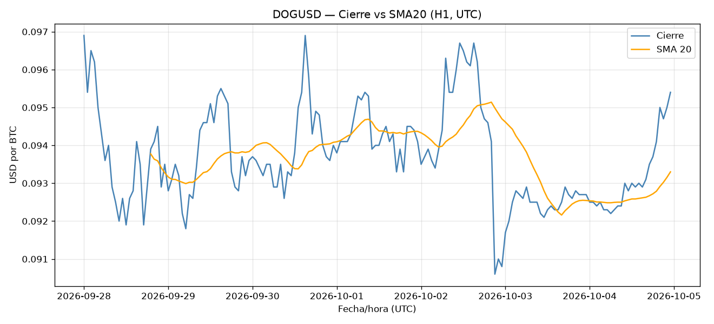
Criterio: |cambio % horario| ≥ percentil 90 (1.10%). 10 casos destacados (cierre en esos instantes): [('2026-10-02 21:00:00+00:00', 0.09), ('2026-10-02 07:00:00+00:00', 0.1), ('2026-09-29 18:00:00+00:00', 0.09), ('2026-09-28 17:00:00+00:00', 0.09), ('2026-09-28 22:00:00+00:00', 0.09), ('2026-09-30 15:00:00+00:00', 0.1), ('2026-09-30 17:00:00+00:00', 0.09), ('2026-09-28 01:00:00+00:00', 0.1), ('2026-10-01 10:00:00+00:00', 0.09), ('2026-09-28 15:00:00+00:00', 0.09)].
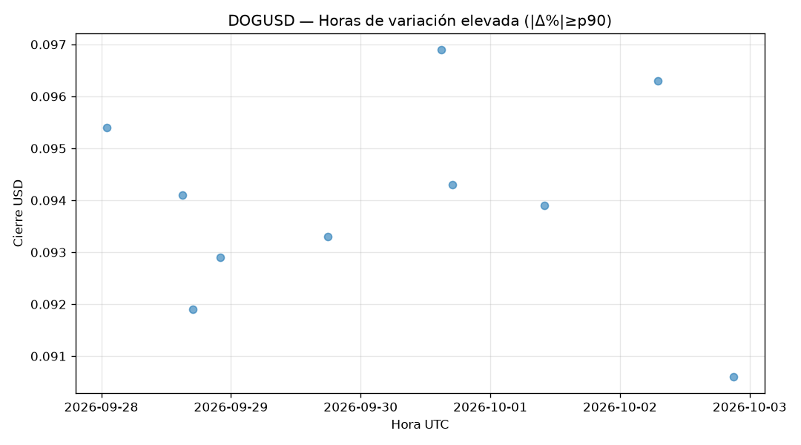
Top 10 velas por tick_volume. Los ticks cuentan actualizaciones de cotización del broker, no el volumen total de LINK del mercado.
time
2026-09-28 04:00:00+00:00 651
2026-09-30 17:00:00+00:00 618
2026-09-28 17:00:00+00:00 610
2026-09-29 18:00:00+00:00 549
2026-09-30 16:00:00+00:00 536
2026-09-30 15:00:00+00:00 434
2026-09-28 18:00:00+00:00 434
2026-09-28 05:00:00+00:00 433
2026-09-29 04:00:00+00:00 404
2026-09-28 16:00:00+00:00 402
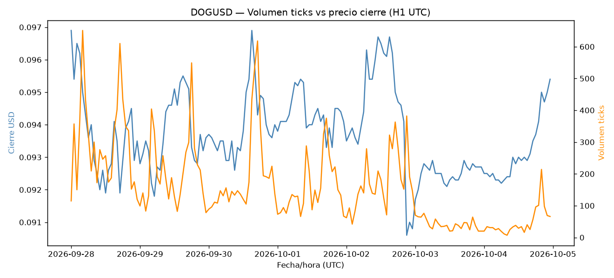
H1: 168 registros (7d). D1: 30 registros (~30d). Rango de cierre H1: 0.09–0.10. Rango D1: 0.08–0.10.
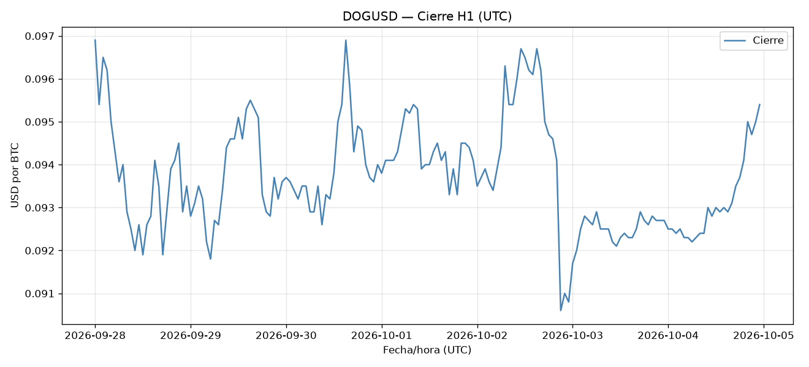
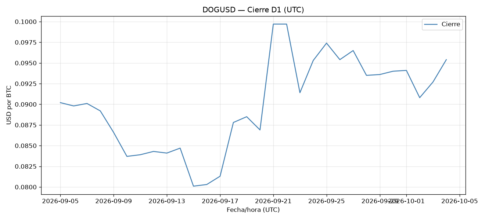
Se despacharon 3 tareas (consulta de velas, gráficas, informe Excel) más una de período vacío. Estado/duración/resultado en output/reports/celery_log.json. Un período sin datos produce `ok:false` y un mensaje claro; no se genera Excel engañoso.
Hojas: ['Velas_LINK', 'Resumen_diario', 'Mayores_movimientos', 'Calidad', 'Metadatos']. Verificación al releer con pandas (filas vs esperadas): {'Velas_LINK': {'rows': 168, 'expected': 168, 'ok': True}, 'Resumen_diario': {'rows': 7, 'expected': 7, 'ok': True}, 'Mayores_movimientos': {'rows': 10, 'expected': 10, 'ok': True}, 'Calidad': {'rows': 1, 'expected': 1, 'ok': True}, 'Metadatos': {'rows': 1, 'expected': 1, 'ok': True}, '_extra_sheets': [], '_missing_sheets': []}.
Cambio % del cierre desde la 1ª vela. Máx: 0.00% (2026-09-28 00:00:00+00:00 UTC); Mín: -6.50% (2026-10-02 21:00:00+00:00 UTC).
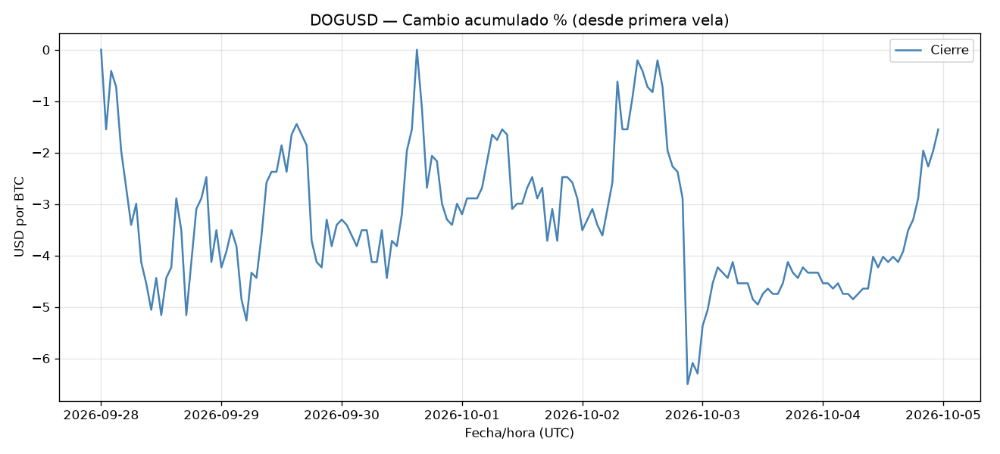
Rachas más largas de velas alcistas y bajistas consecutivas: {'alcista': {'hours': 5, 'start': '2026-10-04 16:00:00+00:00', 'end': '2026-10-04 20:00:00+00:00', 'price_change_pct': 2.151}, 'bajista': {'hours': 6, 'start': '2026-10-02 16:00:00+00:00', 'end': '2026-10-02 21:00:00+00:00', 'price_change_pct': -6.211}}.
Para cada vela, cierre vs máximo de las 24 velas anteriores; se muestran las 10 mayores distancias % (absolutas, en su mayoría caídas desde el máximo).
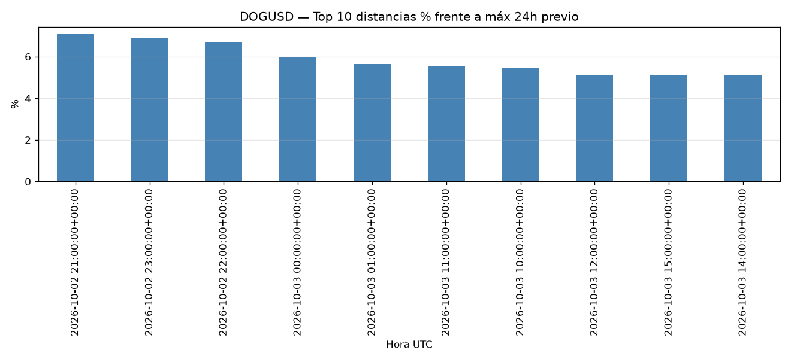
5 mayores caídas horarias y precio 1h/6h/24h después (NaN = sin dato posterior en el feed):
caida_hora_UTC caida_pct close_+1h close_+6h close_+24h
0 2026-10-02 21:00:00+00:00 -3.72 0.0910 0.0928 0.0927
1 2026-09-29 18:00:00+00:00 -1.89 0.0929 0.0937 0.0949
2 2026-09-28 17:00:00+00:00 -1.71 0.0929 0.0935 0.0951
3 2026-09-28 22:00:00+00:00 -1.69 0.0935 0.0922 0.0932
4 2026-09-30 17:00:00+00:00 -1.57 0.0949 0.0940 0.0933
Mediana: 0.000%. Los cambios extremos fueron poco frecuentes (cola de distribución); la mayoría se concentra cerca de 0.
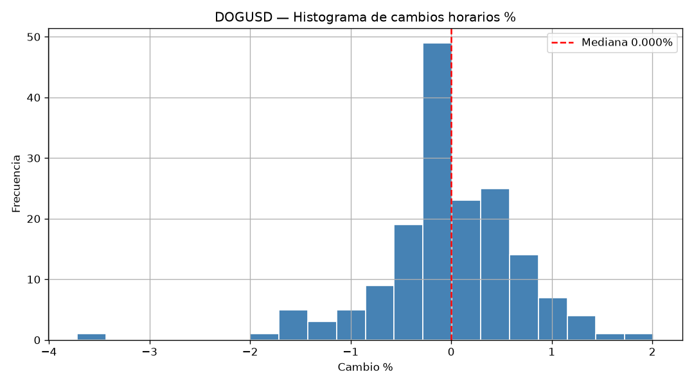
Dispersión de |cambio % horario| frente a tick_volume. Correlación: 0.635. No implica causalidad.
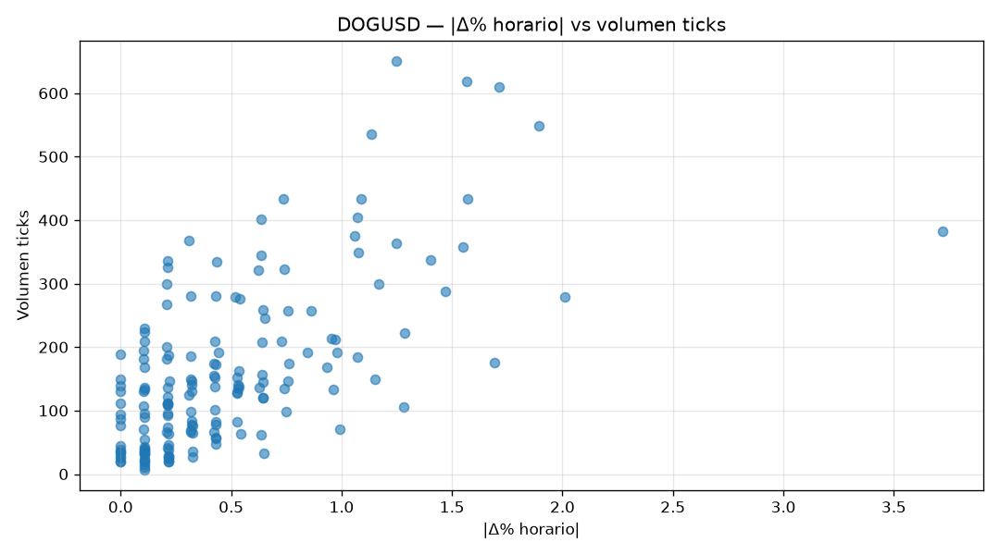
Observaciones nuevas de bid/ask durante una sesión (separadas 5 s):
utc bid ask spread
0 2026-10-05 02:11:22+00:00 0.0959 0.0968 0.0009
1 2026-10-05 02:11:22+00:00 0.0959 0.0968 0.0009
2 2026-10-05 02:11:22+00:00 0.0959 0.0968 0.0009
3 2026-10-05 02:11:22+00:00 0.0959 0.0968 0.0009
4 2026-10-05 02:11:22+00:00 0.0959 0.0968 0.0009
Los datos históricos de velas no sustituyen estas mediciones. Spread promedio: 0.0009 USD.
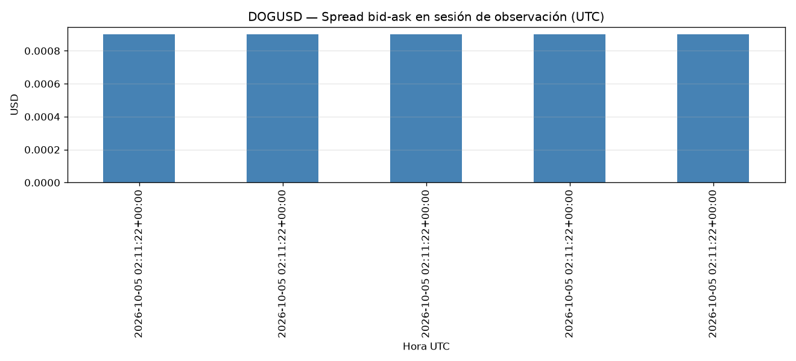
open close high low vol change_pct
time
2026-09-13 00:00:00+00:00 0.0899 0.0841 0.0914 0.0819 17294 -6.451613
2026-09-20 00:00:00+00:00 0.0839 0.0869 0.0908 0.0779 19774 3.575685
2026-09-27 00:00:00+00:00 0.0868 0.0965 0.1053 0.0857 46553 11.175115
2026-10-04 00:00:00+00:00 0.0966 0.0954 0.0977 0.0899 27022 -1.242236
| Filas=4 semanas.
Nueva ejecución en segundo plano y versión actualizada del Excel (v2) conservando la fecha de generación de cada archivo para evitar confusiones.
Excel final consolidado con hojas ['Velas_LINK', 'Resumen_diario', 'Mayores_movimientos', 'Calidad', 'Metadatos', 'Rachas', 'Cambios_acumulados', 'Comparacion_semanas', 'Seguimiento_tareas']. Verificación al releer: {'Velas_LINK': {'rows': 168, 'expected': 168, 'ok': True}, 'Resumen_diario': {'rows': 7, 'expected': 7, 'ok': True}, 'Mayores_movimientos': {'rows': 10, 'expected': 10, 'ok': True}, 'Calidad': {'rows': 1, 'expected': 1, 'ok': True}, 'Metadatos': {'rows': 1, 'expected': 1, 'ok': True}, 'Rachas': {'rows': 2, 'expected': 2, 'ok': True}, 'Cambios_acumulados': {'rows': 168, 'expected': 168, 'ok': True}, 'Comparacion_semanas': {'rows': 4, 'expected': 4, 'ok': True}, 'Seguimiento_tareas': {'rows': 4, 'expected': 4, 'ok': True}, '_extra_sheets': [], '_missing_sheets': []}. Gráficas generadas: 19.